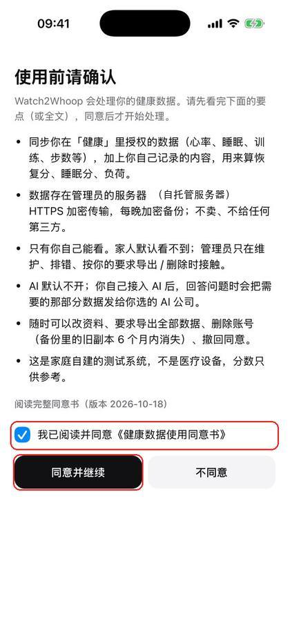
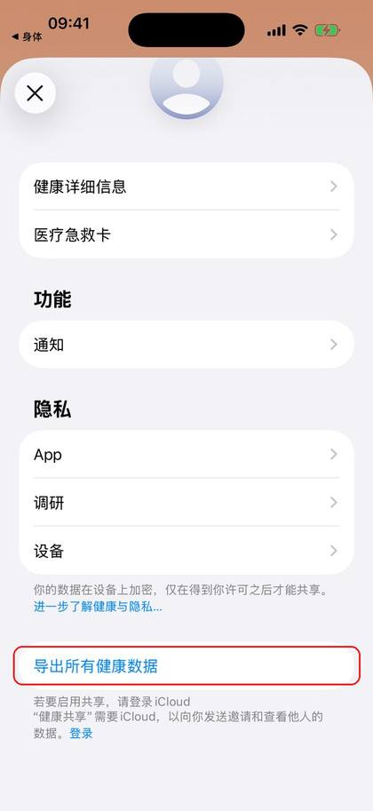
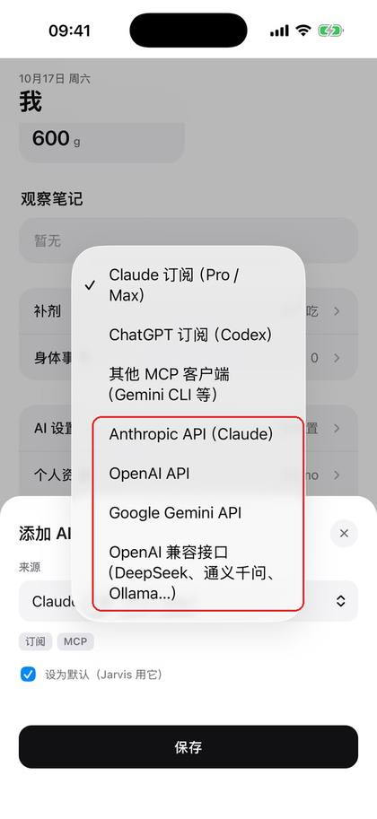
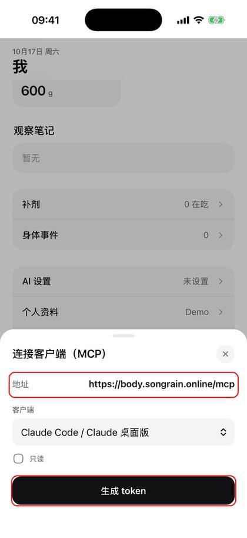
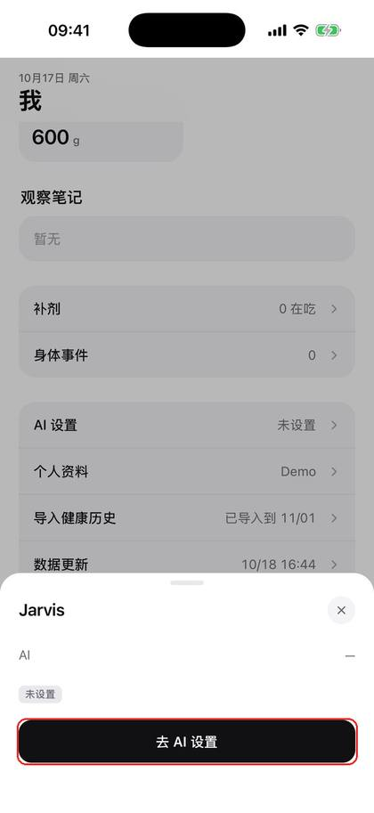

Watch2Whoop 使用手册
Watch2Whoop 是给你的 AI 用的身体数据库。 Apple Watch 的数据自动进来，算出恢复分、睡眠分、负荷；你说过的每一顿饭、每一次训练、每一张化验单都存下来，AI 随时调出来帮你分析。
你必须有一个 AI。 这里没有输入框，也没有记录按钮：吃了什么、练了什么、体重、化验单、哪里不舒服，都是跟 AI 说，打字、截图、拍照都行，AI 帮你记进去。页面只负责看图表和分数。

开始前准备
- 激活链接：管理员单独发给你的一条链接（或二维码），只给你本人，不要转发。可以重复用：换手机、重装 app 再点一次就行。
- TestFlight 邀请邮件：发到你的 Apple ID 邮箱。
- 一个 AI：见「连接你的 AI」。
设置 app
① 装 app
打开 TestFlight 邀请邮件 →「查看测试」→ 按提示从 App Store 装好 TestFlight →「接受」→「安装」。
② 点激活链接
在 iPhone 上点管理员给你的激活链接（或用相机扫二维码）→「打开 App 完成设置」→ 弹出「在 Watch2Whoop 中打开」时点「打开」。

服务器、健康同步、今天页登录一次完成，不用输入任何码。
③ 授权健康
「全部打开」→「允许」。只读取，不写入。

④ 同意
勾选同意 →「同意并继续」→ 填资料 →「保存」。


⑤ 连接你的 AI
见下一节「连接你的 AI」。
⑥ 等第一次同步
第一次同步最近 90 天，几分钟到十几分钟：保持 app 打开、手机解锁。之后 app 在后台自动同步，不用管。
⑦ 导入更早的历史（可选）
想看 90 天以前的数据：「健康」→ 头像 →「导出所有健康数据」→ 存到「文件」。app 里「我」→「导入健康历史」→「选择文件」。


电脑上看
浏览器打开 body.example.com/app。第一次登录找管理员要一条电脑登录链接（只能用一次）。
连接你的 AI（核心）
设置好 app 以后（步骤在下面），点底部「我」→ 最下面的「AI 设置」。三种方式选一种。


「AI 设置」最上面的「Jarvis 用」选当前用哪个（托底 AI 一直在里面），对话框顶部的名字也能点开切换；自己的 AI 停用或删除后会自动回到托底。
方式 1：Jarvis 托底 AI（最省事）
不用申请任何账号，开通后直接用。底层是 DeepSeek，每月约 ¥3。第一次使用时会问你是否同意把你的身体数据发给 DeepSeek 处理，同意后才能用。
方式 2：填你自己的 API key
「AI 设置」→「添加」→「来源」选你有 key 的那家（DeepSeek、通义千问选「OpenAI 兼容接口」）→ 填模型、接口地址、API key、每月预算 →「保存」。


key 只上传一次，之后只显示末 4 位；超过每月预算会自动停。
方式 3：用你的 Claude / ChatGPT 订阅
适合在电脑上用 Claude 桌面版 / Claude Code、Codex 的人。「AI 设置」→「添加」→ 选「Claude 订阅」或「ChatGPT 订阅」→「保存」→「连接客户端（MCP）」→ 选客户端 →「生成 token」，按屏幕上的 3 步在电脑上配置。

token 只显示一次；不用了在同一个地方「吊销」。
怎么用
点任何页面底部的「Jarvis」开始对话。还没设置 AI 时会提示「去 AI 设置」。

AI 要写入数据前都会先问你「确认吗」，你点确认才会记。
输入框旁边三个按钮：
| 按钮 | 用法 | |---|---| | 📷 照片 | 拍照或从相册选，一次最多 8 张（饭、体重秤、化验单、手表截图） | | 🎬 视频 | 选一段视频，自动抽最多 8 张画面；视频里有人说话会先转成文字放进输入框 | | 🎤 按住说话 | 按住说、松开识别（最长 60 秒），文字先放进输入框，你看一眼、改错字再发；手指上滑取消 |
语音在服务器上转文字，不发给第三方，录音转完就删。按 🎤 没反应、或提示「这里不能录音」时：点输入框，用键盘上的 🎤 听写，效果一样。
常见问题
怎么记录？ 跟 AI 说，见「连接你的 AI → 怎么用」。页面上没有输入框是故意的。
卡在「输入 8 位邀请码」：不用手动填。回到主屏幕，再点一次激活链接，app 会自动设置好。
激活链接打不开 app：先确认已经用 TestFlight 装好 Watch2Whoop；用 Safari 打开链接，不要在微信里直接点（微信里先「在浏览器打开」）。
数据没更新：打开一下 app，保持解锁几十秒；锁屏时 iPhone 不让读健康数据，解锁后会补上。
以前用快捷指令同步的：app 同步正常后，在「快捷指令」→「自动化」里删掉同步健康数据的那几条，避免重复和报错。旧版手册在 这里。
换手机 / 重装 app：再点一次同一个激活链接，同意和资料不用重填。
隐私：数据只有你自己能看，详见同意书。用 AI 时，对话内容会发给你选的那家 AI 服务。
导出 / 删除数据：找管理员。